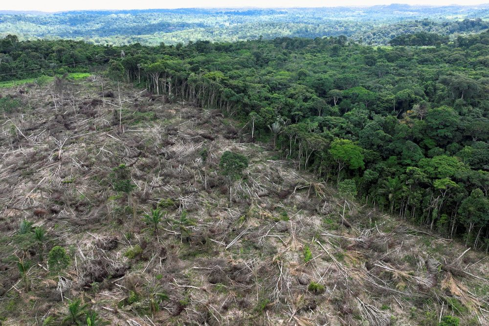
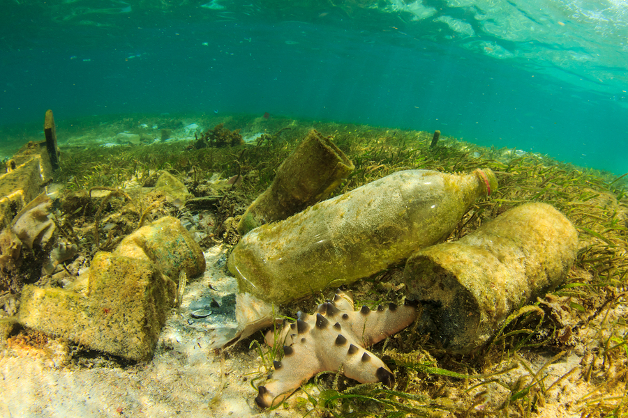
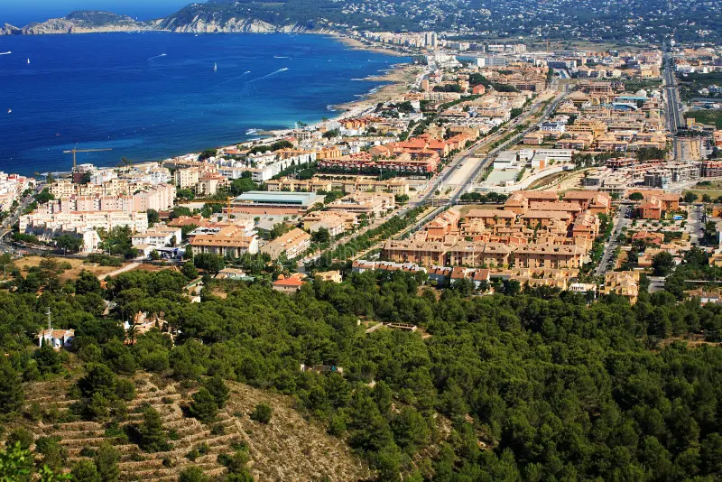
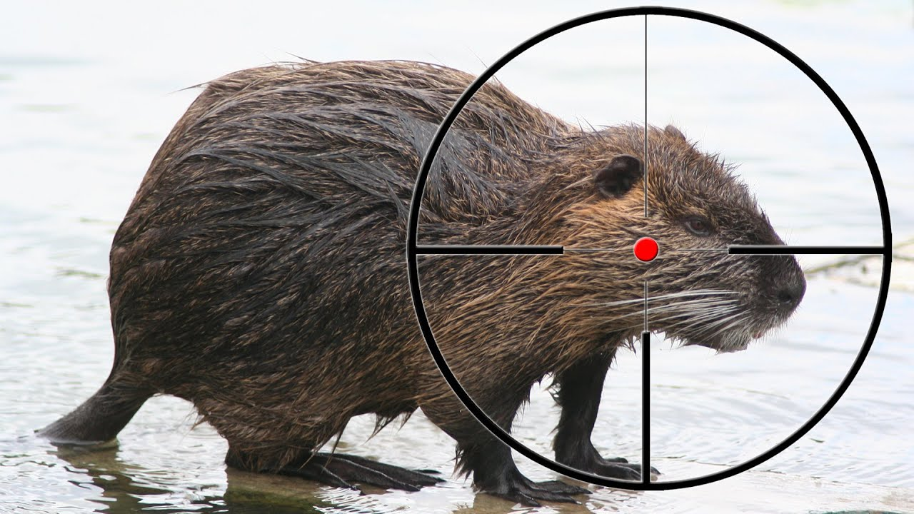
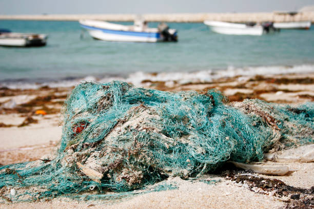
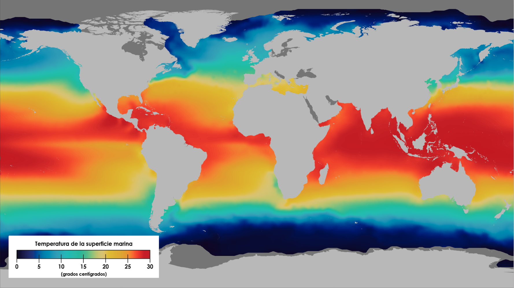
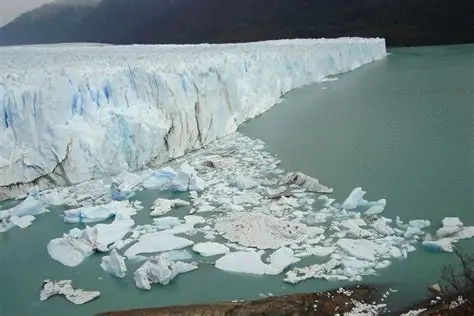
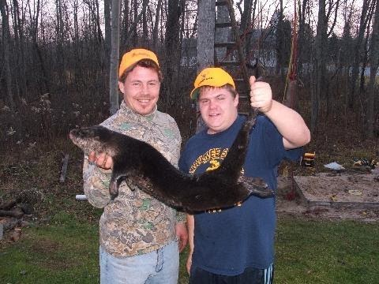
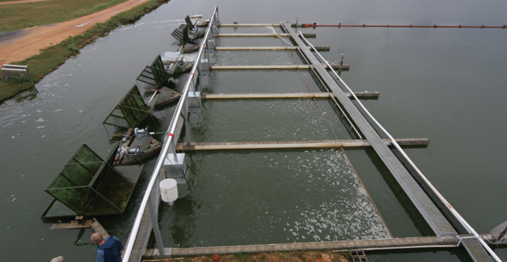

PÉRDIDA DE HÁBITAT
La destrucción de los ecosistemas acuáticos es una de las principales amenazas que enfrentan las nutrias en todo el mundo. La intervención humana ha fragmentado y degradado los lugares donde estas especies viven, se reproducen y se alimentan.
Deforestación de Riberas

La tala de árboles en las orillas de ríos y lagos elimina la vegetación que protege los hábitats de las nutrias.
- Erosión de las riberas y pérdida de madrigueras
- Reducción de la sombra que regula la temperatura del agua
- Disminución de la disponibilidad de alimento
- Fragmentación de poblaciones de nutrias
Contaminación del Agua

Los desechos industriales, agrícolas y domésticos contaminan los cuerpos de agua donde viven las nutrias.
- Metales pesados y productos químicos tóxicos
- Plásticos y microplásticos en el agua
- Fertilizantes que generan floraciones de algas
- Derrames de petróleo en zonas costeras
Urbanización Costera

El crecimiento de ciudades y complejos turísticos en las costas destruye los hábitats de nutrias marinas.
- Pérdida de zonas de descanso y reproducción
- Aumento del ruido y tráfico de embarcaciones
- Contaminación lumínica que afecta sus ciclos biológicos
- Alteración de las corrientes marinas
CAZA Y PESCA ILEGAL
A pesar de las leyes de protección, la caza furtiva y la pesca incidental siguen siendo amenazas graves para las poblaciones de nutrias en diversas regiones del mundo.
Caza por su Piel

La caza de nutrias por su valiosa piel ha sido históricamente una de las principales causas de su disminución.
- Millones de nutrias cazadas en el siglo XIX
- La nutria marina casi extinta por esta práctica
- Comercio ilegal que aún persiste en algunas regiones
- Especies como la nutria gigante son las más afectadas
Pesca Incidental

Las nutrias quedan atrapadas en redes y trampas de pesca no diseñadas para ellas, causando su muerte por ahogamiento. Algunas soluciones pueden ser:
- Implementar redes de pesca selectivas
- Crear áreas de pesca prohibida para proteger hábitats
- Capacitar a pescadores en técnicas sostenibles
- Monitorear las capturas accidentales
CAMBIO CLIMÁTICO
El calentamiento global y sus efectos están transformando los ecosistemas acuáticos, poniendo en peligro la supervivencia de las nutrias y las especies de las que dependen.
Aumento de Temperatura

El incremento de la temperatura del agua afecta la disponibilidad de alimento y la reproducción de las nutrias.
- Reducción de poblaciones de peces y crustáceos
- Alteración de los ciclos reproductivos
- Aumento de enfermedades en poblaciones acuáticas
- Cambio en la distribución geográfica de las especies
Deshielo de Glaciares

El derretimiento de glaciares y capas de hielo altera los ecosistemas de agua dulce donde viven muchas especies de nutrias.
- Cambio en los caudales de ríos y arroyos
- Aumento del nivel del mar en zonas costeras
- Pérdida de hábitats en regiones de montaña
- Alteración de la salinidad en estuarios
CONFLICTOS CON HUMANOS
La creciente interacción entre humanos y nutrias genera conflictos que muchas veces resultan en la muerte de estos animales o en la destrucción de sus hábitats.
Competencia por Pesca

Los pescadores ven a las nutrias como competencia por los recursos pesqueros, lo que genera persecución y muerte de estos animales. Algunas soluciones son:
- Promover la pesca sostenible
- Crear programas de compensación para pescadores
- Educar sobre el rol ecológico de las nutrias
- Establecer zonas de exclusión pesquera
Infraestructura Acuática

Presas, canales y otras infraestructuras acuáticas fragmentan los hábitats de las nutrias y obstaculizan su movimiento.
- Bloqueo de rutas migratorias
- Reducción del flujo de agua en ríos
- Cambio en la profundidad y temperatura del agua
- Mayor riesgo de atropellos en carreteras cercanas